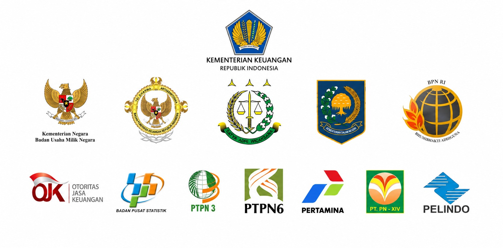
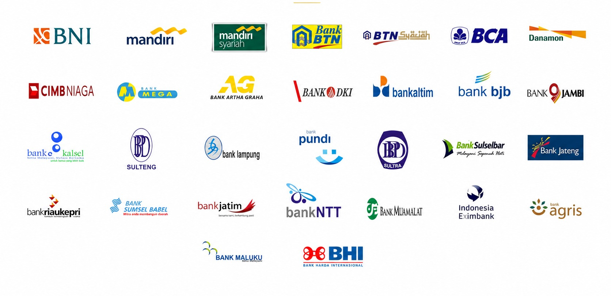

Pemkot Balikpapan
Penilaian aset jembatan dan jaringan, tanah, gedung, dan bangunan Kota Balikpapan.
Penilaian Aset DaerahRekam penugasan pada pembangkit listrik, perkebunan, pertambangan, properti, korporasi, dan aset pemerintah. Pengalaman yang memperkaya pemahaman kami atas karakter setiap aset.
Pilihan proyek dari portofolio perusahaan. Buka company profile lengkap (PDF).
Penugasan untuk kementerian/lembaga, pemerintah provinsi, kabupaten dan kota, BUMN, BUMD, serta badan layanan publik.
Penilaian aset jembatan dan jaringan, tanah, gedung, dan bangunan Kota Balikpapan.
Penilaian Aset DaerahKajian optimalisasi Barang Milik Daerah serta kajian kontribusi skema BOT pada aset kota.
Optimalisasi & BOTPenilaian tanah untuk infrastruktur, fasilitas umum, rumah sakit, sekolah, TPA, irigasi, bandara, dan jalan.
Land Acquisition AppraisalPengalaman penilaian untuk Pertamina, Aneka Tambang, Wijaya Karya, dan Adhi Karya, serta kajian SPBU untuk Pertamina.
Appraisal & StudyDelapan kajian kontribusi kerja sama pemanfaatan aset di Surabaya, Bogor, Buton, Sulawesi Tenggara, Bontang, dan Kupang.
Dokumentasi kemitraan dan klien pada sektor publik, badan usaha, perbankan, serta lembaga keuangan.
Kementerian, lembaga, BUMN, dan institusi nasional dalam dokumentasi kemitraan perusahaan.

Bank nasional dan daerah, bank syariah, serta lembaga pembiayaan dalam rekam kerja sama perusahaan.

Nama dan logo merupakan dokumentasi hubungan historis dalam company profile, bukan konfirmasi kemitraan yang masih aktif.
Diskusikan konteks industri, lokasi, dan tujuan penilaian agar kami dapat mengarahkan tim dan metodologi yang relevan.